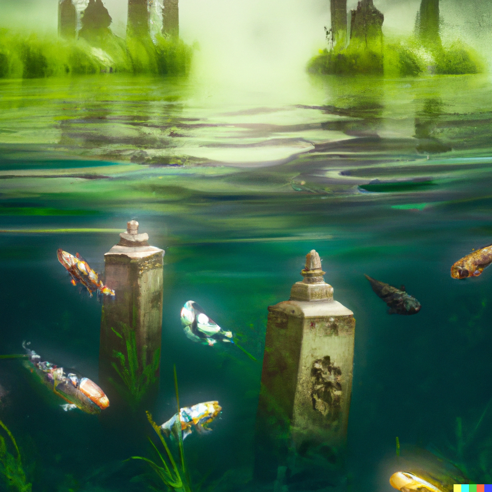
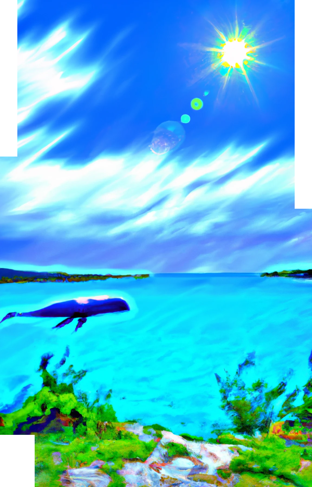
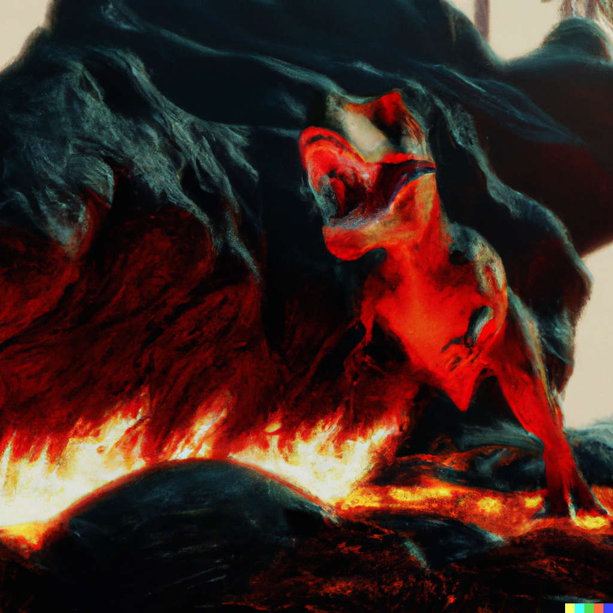
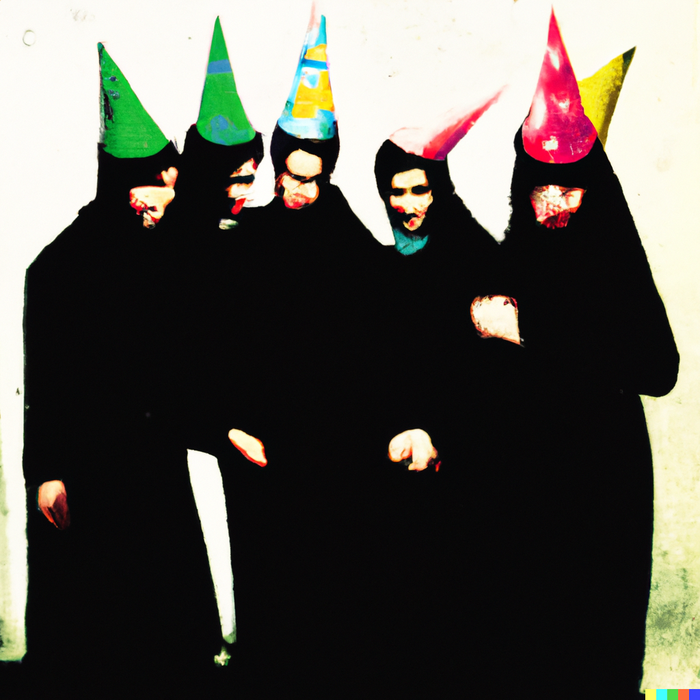
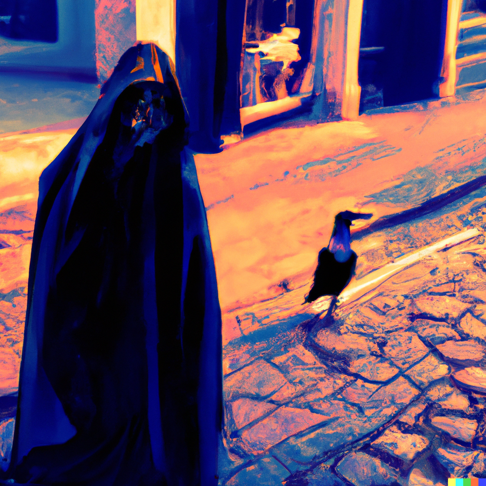
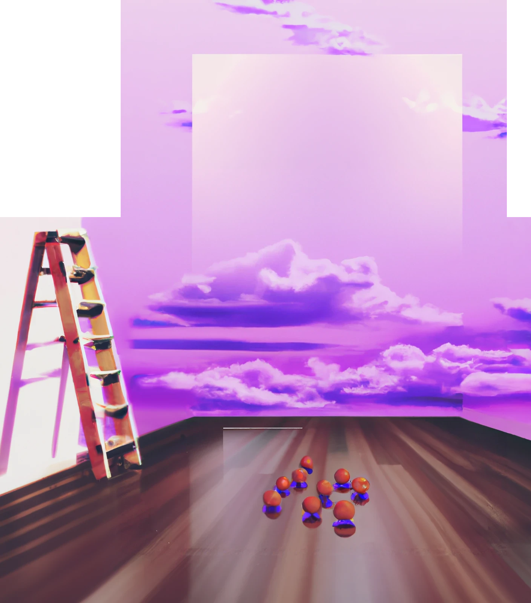

Waterpark Detour and Weird Elevators
January 8, 2023
Bruno and I wanted to go from Northbrook to the brookfield zoo. Took us to a waterpark. Directions were to go down a water slide. Had to wait in line on a wooden stair case. Kids kept cutting in line by climbing up over the railings to go up a stair case. I thought ‘someone could slip and die’ then a little girl did slip right in front of us. The fire department came to rescue her.
We left and asked firefighters for directions. They pointed us back inside. Weirdly tiny elevator didn’t work. Tried to use helmet head pieces but the UX was impossible. I went to the bathroom and peed. Came out and bruno was meeting up with friends at a table to play video games.
Farmer's Market in Oppressed Village
January 1, 2023
I was running a farmers market stand under a white tent selling some kind of sandwich. People weren’t into it and I watched other to see what was enticing. People wanted more bread on top of the bread (like a crust?) so I tore thin strips of crust off as a garnish. This was successful.
Then someone came over and said that the village across the way had would be imminently attacked because someone did not wear her head scarf. I crossed a dusty dirt road behind the tent to go to that village.
Body Surfers in the Hotel
December 26, 2022
The ocean surf came right up to the 3rd floor where we were staying in Hawaii. The surf came in and out and People were body surfing into our room. I told them to get out
YSL in School
December 15, 2022
Mom drove me to school Glenbrook south YSL In the front lobby. I hadn’t been at school all year because I was traveling and working. I tried to find my way around school. They asked why I hadn't been in class all year... I forgot to finish writing this entry but i remember it was a bit stressful
Bus Factor
December 10, 2022
Johnny (Co worker from Amazon) died in car accident just after talking to me on the phone
City Bear Attack but also, Japan
December 3, 2022
Big snow field in city park. Multiple horses being attacked in a frozen lake by tall massive bears. At first I thought the house was just swimming but it was fleeing. Then there were multiple. And very bloody. Travel farther away to a small building looked like a shopping container inspired by traditional Japanese decor. Outside lots of green with fall leaves swirling around the air. Beautiful grey mountains
Angry Uber
November 23, 2022
Uber driver who looked like sheng wang dropped me off down the street from my house. I got out and went home but didn’t tip because I didn’t want to and it was far from my home. He followed me and ransacked my garage
Grandparents
November 8, 2022
I went back to work. I was worried that I hadn’t prepared and I didn’t have anything ready for the pie crust. Dreamed I went home for thanksgiving and had to work. Was trying to do some coding and it wouldn’t compile. Then my grandparents came. I got up to hug them.
I need to Poop
November 7, 2022
Note: I ate kale and lentils before bed. Dreamed I needed to poop. I went up to the bathroom which had a plain white porcelain toilet by a window. Tried to open window but it was pouring rain and everything got wet. I thought to myself I would never be able to poop and flick it off the window sill in this weather. I went back. I really had to poop
Yeah this is weird
Bad Dreams
November 4, 2022
Bad dreams
Swashbuckling white mouse in a bowl of Jook in a sewer
Take off in a plane. Bruno and I are in opposite aisle seats. Just after takeoff plane goes nose straight up then flips upside down and lands
I get out just fine. I turn- Bruno is a bloody mess lying on his back and barely moving
I stop the dream
Dream shift. I go to a Halloween rollerblading event at a mall in Seoul Korea. Meet group near a college and walk all the way to to the mall. I run into my old boss who likes to write and he asks how my work on my story is going. I skate away. I end up in a store that looks like Clare’s and put my shoes away. Then it starts to get too crowded for my liking and I try to go catch up with my old boss. I don’t find him. The mall is set up like a series of infinitely going down ramps. But there are also stairs. It’s gonna be great. I run into stairs right away. A dark haired girl I don’t know tells me we should skate together but she is more of a wild outgoing party type than I am and immediately goes down a set of steps that goes to a swimming pool. I hear her yell I’m gonna jump in as I skate away. I decide to go home. Outside I run into friends with a car they want to go to the skate event but it’s too full. The car is too full for me so I ask for directions. They say it’s farther than I think but I can skate back along the main construction road. I’m a bad and slow skater and the Rough terrain is scary. I decide to go around the construction and end up totally lost in Seoul. Dream ends with me realizing I’m lost, realizing I left my favorite shoes at the mall and trying to get A ride home
Condo Party
October 29, 2022
Weird dream. Party at my condo which overlooked a dark water (a sea maybe?). felt kinda Floridian. A lot of people sat on my sofa and around. I danced with bruno. A waltz or something around the living room. But I put on a black 1 piece bathing suit under my clothes first.
Shifts to a mental hospital. Can’t escape the hospital because we’re still in the middle of the sea. I am not a patient or a doctor.
It is night time, I look down a hallway to a dark room with the door open. A young woman with medium hair sits up in bed and turns towards me.
Dream over
Ballet, Cafe, Mountain Hideout
October 26, 2022
In a warehouse/ballet style room with wooden floors and a dark curtain in the middle (drawn back). Rehearsing a dramatic improv play with a group of people
Something chaotic was staged on the otherside of the curtain
On my side, a monster with a tall oval green face covered in 10 eyes and humanoid body comes towards me. Half the face has it’s eyes closed and I think ‘where are its other eyes? That’s not what these look like?” And then it opened its eyes. I ducked around it and it attacked another student just behind me. it dragged that student behind a set
I backed into the curtain and wall, I raised a knife in both my hands above my head to ward off a werewolf that was about to attack me. Then the director yelled CUT and we all stopped.
2 coffee places down the street I went to get coffee. First place looked like nothing on an empty narrow street corner at mid day. Dull grayish green, two stories. Called Ballard Ballard Cafe. Inside busy. Turned around, looked into a shop with a full glass window with very ornate marble table. dark black glossy chairs. Modern but weird and a chandelier. Closed.
Turned back up the street towards the ballet studio, a tall man in a top hat walked through an archway with a dark midnight blue cloth hanging down. The man wears a dark three piece suit with a short cape. It is all covered full of round flat silver and gold objects, almost like pocket watches
Dream shifts
Ended up going up a mountain. Someone smuggled baby sky bison up with us. It looked like the alps. Big grassy open area high in the mountains. one of the mountains opens up in the front like a tent. Turns out its a giant hideout covered in animal skins, designed to look like a mountain
As we go in, family comes out and welcomes us. someone is giving out triangular and octagonal hongbaos they give one to my uncle. Then they go- oh no I gave you too much and they
Your Classic Nightmare
October 18, 2022
Sex in a hotel with bruno. Mom walks in.
Pulling Teeth
October 9, 2022
features me and Julia and my old boss Peter. Sitting around my family’s dining room table. They are asking me about Invisalign because I’d done it before. Through the conversation one of my back teeth is bothering me. I tell them Invisalign is great and worked for me. At some point I reach into my mouth, pull out my own Molar and hand it to Julia.
Climbing Gym
October 4, 2022
It’s the gym but it’s got more slab walls on the right and then slopes downward and becomes kind of cavernous in the back. I spend time climbing in different rooms
Travel Stress, wake up screaming
September 23, 2022
Traveling with parents. I casually mention to mom I have a letter to respond to when I get home. She spends all day asking me about the letter. I don’t want to tell her about it as it’s from the collections agency asking me to pay an overdue medical bill.
I keep telling her it’s none of her business (which is true). I finally storm away back to the hotel
When I come out of my room dad’s there and I tell him I’m a 30 year old woman and mom doesn’t just get to read my Mail anymore. Dad says he understands and will talk to mom about it
Mom comes in and asks again what the letter was about. I tell her what I told dad. Mom asks “so it’s not about family?”
I wake up screaming “NO”
Koi Pond Graveyard
Date forgotten

walking around a city in europe, probably italy or somewhere along the mediterranean sea. the graveyard floods. looks like a koi fish pool.
Airport Trams and Tropical Helicopter
September 9
Two dreams.
First dream, walking to a train station trying to go to the airport with luggage. Found train station, get on train but not sure what stop to get off at for the airport. There are 3 stops for JFK and they end up at different terminals. If you get off at the wrong one, it’s a 6-10 block walk back to where you need to go. If you miss JFK completely you’ll be too far away and miss it.
2nd dream
Swimming in a beautiful crystal clear water. Big red steel beams, if you cross them, they turn into a helicopter. I pull two together to be perpendicular and swim out farther. I get in the helicopter
There’s a pilot, my friend Julia and Sokka from ATLA. We fly up over the water, across the way towards lush cliffs with a lot of rocks poking through. We come around the cliffs to see a wide valley stretching along the coast with grasslands and rivers. It looks a lot like Hayden valley in Yellowstone. We see a family of bears drinking water, a group of bison and then notice some wolves hunting the bison.
As we observe, a giant macaw parrot flys into the helicopter and gets stuck on the windshield, totally obscuring the view for the pilot. It was so giant that all we could see was its tail feathers splayed across the window like a giant rainbow fan.
We start to slowly go down in a uneven way. Dream ends
Surreal Islands in Hawaii
August 30
Extremely vivid dream.

Was in Hawaii but needed to go home. Had to swim to the ferry terminal that would take me to the airport by island hopping because none of the ferries docking were the ferry that would take me to the airport
It was a really beautiful sunny day with crystal blue and aquamarine waters. In this dream, I was a great swimmer
I ended up on a relatively rocky and deserted island. i looked out towards the other islands in the distance- close enough that I could make out some rock details. I saw an enormous sperm whale swimming the island channels. I wanted to take a picture but realized my phone was left on the beach of the island I left. I realized that I was on one of a series of themed islands.
The sun went down rapidly. Just at dusk I saw a shallow round pool of water in sandstone that had rain but now clouds. The drops were just appearing out of thin air and making musical sounds.
As I was going to sleep I made a loud noise and someone came to explain to me that all the islands were different. We travelled to 3 islands
1. A diner island. We got food there
2. A weird dark cave with weird colorful blobby animals like something out of dr Seuss. The cave was scary. We were going to camp there then we didn’t
3. A big island made of sandstone that seemed to be having a waterpark party.
When I got to airport, didn’t have passport or phone
Sex
August 26, 2022
Sex dream with bruno. Missionary. Very nice
Please get me out of here.
Jurassic Park
August 11, 2022
Very violent dream. We were on an island and it was every person for themselves to avoid the t-rex. Trex roamed the island- originally people had come to do research but it got out of hand. The trex were able to sense fluctuations below ground and would just snap a the ground and kill whatever was there. Many piles of bloody mangled bodies.

This island was volcanic.
This was more of a 3rd party view with the story of the island. I wasn’t really a participant or running. I was just seeing things from above.
Whimsical Burqas
August 8, 2022
Dreamed a group of friends were all wearing burqas with party hats on top. We walked through the baseball field along the home teams side and tried not to get hit by fly balls

Ended up in a big mansion and a blue light lit bathroom with a toilet. Don’t know why. We didn’t like the bathroom.
Kitty cabin
August 5, 2022
Drive through desert 3 hours too weird place
Groups of 4 wander 2 story home with theme based on movies and random obscure quotes
Larger groups of themed people populate the
We sit in alternating columns
Ricky Gervais explains. Kind of. All the rooms seem like art installations. Everything is dimly lit
At the end he asks if we will return next week to participate as the cast. I say no
I drive 3 people home. The car is shit with bad brakes. I keep going in reverse on accident. Eventually we crash
Mansion party with Stairwell bathrooms
July 24
Dreamed I was in a massive mansion for an event being thrown by a girl of Indian descent who I’ve known in the Pat. The house was the size of a mall. Red and gold motif with lots of velvet and massive grand staircases crisscross the entry ways. My place to stay was in a place hard to find off the left Of the entry way and on the 4th floor. Part of celebration included a paintball game. At some point I locked a bunch of people in a closet and told them to think about what they’d done. Those people eventually escaped and one hunted me down in a big bright hallway with windows all in one side (like a hospital or office hall).
I ran off to find my place where I was staying. I made it through the entry way but going up the stairs I got lost and confused. I made it to floor 2 but the 2nd floor landing was completely taken up by a bath tub and when I pulled back the curtain some random old stranger was bathing. I went back and tried to ask for help but no one knew where my room was. I woke up
Circle in a Field
July 23, 2022
Weird dream. In a farm field covered in light snow trying to cook good food. Mom me my food was no god and I should cook it more like my boyfriend. While she said this I was drawing large abstract patterns in the snow with a stick
A lot of people in this field. We were sitting in a circle
Lost car in Italian market
July 21, 2022
Stress dream. Driving through Italy. Ended up on a weird road that was a covered market place with cobblestone and brick roads. Road ran right along side people selling flowers, wine, cheese, food and other goods. Very rustic. While driving the car, some how ended up losing my car- It went up a ramp to the left while I and my passenger went straight on the right.
Via dream logic, we kept driving and I knew I had to turn around to find the car but the market place was too narrow so kept going, eventually turned around but everything in the market looked different coming back. I couldn’t find my car. Backtracked a couple times. Ended up asking someone in an open eating hall if they had seen a baby blue Prius. They said no- but ask the valet people outside. The valet people were not helpful. I woke up.
Travel Stress
July 20, 2022
Travel stress dream. Woke up from a nap 90 minutes before flight left. Takes 30 min to get to airport. Ran around house packing. Asked people to help order a ride while I packed. When I got to the drive way I asked ‘did you order the ride’ person said no. I yelled ‘why’ and woke up— I was yelling why in real live
Korean Kaiseiki
July 16, 2022
Dreamed boyfriend and I were served a 10 course meal in a weird ten structure during which were were sitting on the floor traditional japanese style and each course we had to change our outfits. All the outfits were inspired by traditional Korean wear
Then we had to take notes on the clothing and make notes for a designer to custom make us our own 10 outfits inspired by the food and clothes we just wore. I took a lot of notes trying to explain I wanted a cheongsam that would be light
Then I lost my notes
I Can't speak French
July 12, 2022
Insane crazy dream. Kind of a nightmare. Dreamed I was lost in Paris and trying to speak French but no one understood me very well. Although they did figure it out eventually. I was trying to get somewhere from my apartment.
Dream changed and I was trying to wash a white shirt that had been stained. I used a bleach solution and poured it over the shirt while I held it in my hand. One of my fingers on the hand holding the shirt started feeling funny so I stopped. My finger had disintegrated. It was red and raw.
Other around me asked what was wrong
I had to stop the dream.
Botanical Theft
July 6, 2022
I was trying to steal a plant from a botanical garden in their outside the visitor center display
I was almost caught so I went inside and someone tried to tell me I should volunteer for the garden. They had a plastic bucket of plants
Fire Nation Chase
July 1
The fire nation was chasing me. I had to break out of my cage that was on top of a flying bison and get help. Avatar Aaang and his daughter were floating down a river to heal and i chased after them, telling them the world needed them. The river was beautiful lush sloping canyons that opened up to rolling hill vistas with tall green grasses.
They chased us through a night market full of tents that were cleaning up for the night. I hid in a both room with another person. Went into the accessibility stall and was like- one of us needs to stand on the toilet so they only see 1 pair of feet. Then. You pretend to do something that’s taking a while. So the person I was with (woman- idk who) started pretending to do her makeup in the mirror. Then people started stepping in- opening the door to wash their hands because for some reason the only sink was in the accessibility stall. Everyone laughed.
Integrals
June 28, 2022
Doing math problems. Very difficult integrals. somene was bothering me and I couldn’t finish. Looked like a really boring class room in college.
Your Dreams stress me out.
Spiderman's girlfriend and a turtle tag scene
June 20, 2021
In a large grocery store with self checkouts. They are all full and I am in a big rush with a huge shopping cart full of non-specific items. The lights are all yellow and fluorescent. it feels like an Hmart the 90s. all the shelves are weirdly short- I can see over them. A checker tells me that there’s a special self checkout way in the back through several aisles of goods. Its dimensions are longer than normal so it will help me check out faster. I rush back there.
The dream shifts- it is the hey day of Spiderman and we are in a city. Spiderman has a team of people who know his identity and are helping him stay low profile in this climactic moment. He’s about to go on a mission he’ll probably never come back from and we both know it. I am part of his team, a journalist of some kind. Our relationship is a secret. We share an embrace and kiss in a closet, where the rest of his team cannot see. He disappears into the night
This dream has a tag scene. I watch an old woman at a single grassy grave site laying flowers. I am the old woman. We cannot see the name on the flat brass name marker but we know that it is Peter Parker. We understood he died the night of the closet kiss. Water washes up near the old woman and there is a turtle. She scoops it up and brings it back to the ocean.
The view pans out. This grave site is near a tree on a coastline. There is a quaint cottage. It is near dusk and you can only see the silhouette of cottage and a boy sitting atop the roof. A new story is about to begin. End dream
I am told facts
June 19, 2022
I had this dream while camping. It was a little cold at night. I wonder if that is the reason didn’t dream visuals. I dreamed words. This has not really happened before.
Throughout this dream, people were telling me facts. I remember receiving multiple unrelated facts. The only specific fact I remember is that someone told me that my sister and her boyfriend had to fly back to New York in order to maintain a hybridized marriage license before they would be able to buy an apartment in the city.
3 eyed crow and a purse
June 12, 2022
I am sitting in a cafe with red chairs, it is bright out and the scene is vaguely European but with a Boba Tea shop vibe. I am sitting, then I get up to leave.
I am in a street that is very gray, somewhat narrow and cobblestoned. Think- old school London where buildings are no more than 5 stories tall. I am walking down the middle of the street, there is no one else around but a crow who stands in my path. At first it is a normal sized crow, then i recognize the grow from it’s somewhat poofy domed head. It looks like a crow that lives near me. As this realization dawns on me- the crow grows to the size of a man. I see clearly that it has 3 eyes. the eyes are yellow and appear like vertical slits. The 3rd eye is in the center of its head, just above the beak and slightly above center of the other two eyes.

I turn, I know I cannot go past the crow. I walk back a few steps then turn left. I have to go back to the restaurant to get my burgundy red Longchamps bag which I left on a chair at the cafe.
purple cloud reprisal and a fart
June 11, 2022
I dreamed I took a bus home, then my brother, sister and I were in my sister’s room our parents’ house on her bed. I told them both about dream I had two nights ago about the purple clouds. Then my brother farted such a stinker that I mouth breathed it in and coughed. He denied that he farted and scooted slightly farther away from us on the bed.
Throughout the dream, it was understood that my dad and my sister were planning a trip to Mount St.Helens because they wanted to go golfing. I was not convinced it was a good idea.
Lisa Frank, Purple Clouds and Gumballs
June 10, 2022
I drove my Prius with me and my sister off a cliff on accident but it landed right side up and we were ok. So I grabbed my luggage and tried to repack it but it was too hard because I had to pack for both Chicago and Kauai. Then the world morphed and I was in my sister’s room and some weird dude tried to convince me “stop packing and check out this Lisa Frank poster. Let’s make a game of coloring it in.” The Lisa Frank poster is not super clear but is the kind of poster from the 90s where all the lines are raised fuzzy black
Then somehow my sister and I were trying to escape this weird dude. We were still in a room but it was the size of a ballet studio and the ceiling was a cloud layer and purple lights were pulsing. It was a completely empty room except for at the far end, where our mom’s old wooden wardrobe dresser stood against the wall. We understood if we climbed up into the clouds we’d be safe from the weird dude. My sister made it up the wardrobe into the clouds, I handed her my luggage then I went up but it turned out the clouds only supported one person at a time.

I went back down to fight the weird dude. We threw gumballs at each other. Some of them were normal sized but a lot of them were the size of billiards balls. I licked some to make them sticky and gain advantage. The gumball fight eventually turned into a game, we were having too much fun so we made a truce.
Sushi Kashiba
June 2, 2022
I know I had 3 dreams last night but I cannot remember the first one. I barely remember the 2nd one…. It has completely slipped away. I think it happened in a forest in September. The 3rd one was about scheduling dinner at sushi kashiba.
I knew from a friend that sushi kashiba takes reservations for the main restaurant but bar seating is first come first serve. I show up in line to wait. I put my name down on the list. I ask where I am on the list and the server gets mad at me As I am turning to leave, I end up in a back courtyard area with brown wooden folding chairs and small lawn tables. the server shows up again, she has a short just above the shoulder bob haircut. She tells me that I budged in line and that I was extremely discourteous. Everyone else made reservations so why am I special? I see on her clipboard I am the only person on the waiting list. Turns out, reservations are required for everything and so she thinks I’m insanely rude for just showing up and asking to be seated.
It is a misunderstanding. I end up eating with the kitchen staff in this weird backyard courtyard area.
The person I am waiting for is late from work. The parking situation downtown is bad and they do not show up- even when a table becomes ready for me.
Wow. you finished...back to top.